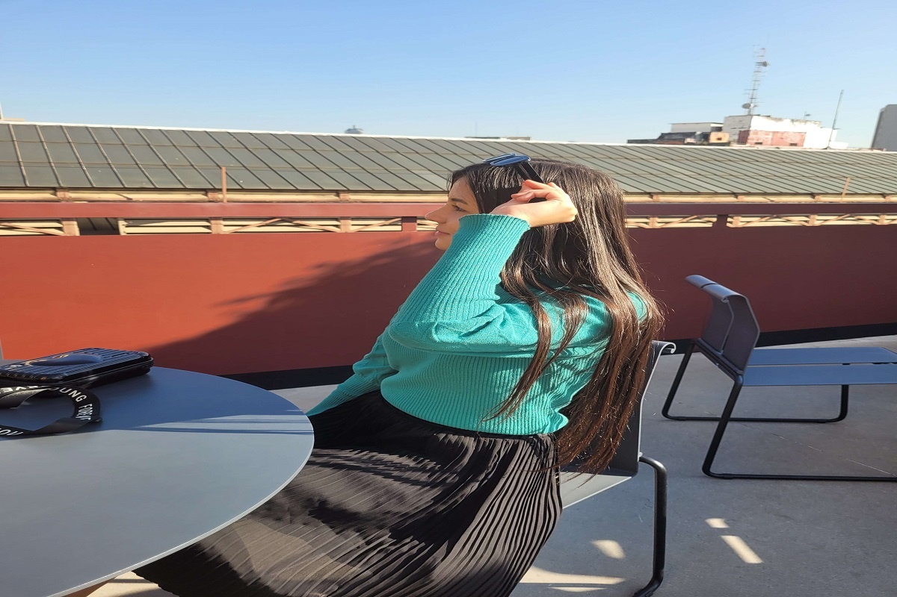

Essa Página é um presente para você Amabylin: Feliz aniversário!
Uma carta para você
Querida maby, hoje chegou o grande dia, os seus 18 anos, o tão esperado 18tou né? kkk Estou aqui desejando um feliz aniversário, que esse dia seja repleto de alegria, felicidades. Desejo tudo de mais lindo, leve e especial para você hoje e sempre. Que neste dia Deus possa abençoar sua vida e que Ele possa estar te guiando nessa nova caminhada. Estou dedicando este pequeno tempo para fazer esse textinho em forma de presente, pois não posso estar ai pessoalmente comemorando esse dia tão especial que é para você. Quando penso na nossa amizade e em tudo que a gente já viveu juntas, sinto o coração cheio de alegria. Você é uma pessoa mais que especial pra mim e que sempre quero estar pertinho, compartilhando a vida com você. Espero que o seu aniversário seja incrível, maravilhoso, cheio de amor e riso. Exatamente como você! Que o seu aniversário seja tão especial como você é para mim, em todos os sentidos. Este é um momento perfeito para dizer o quanto estou feliz por ter você como minha melhor amiga! Obrigado por ser uma amiga especial para mim, espero que possamos continuar essa amizade para todo sempre S2. Então parabéns maby, desejo tudo de bom para você, espero que goste desta pequena lembrança. Feliz aniversário, eu te amo minha best S2 Beijos.